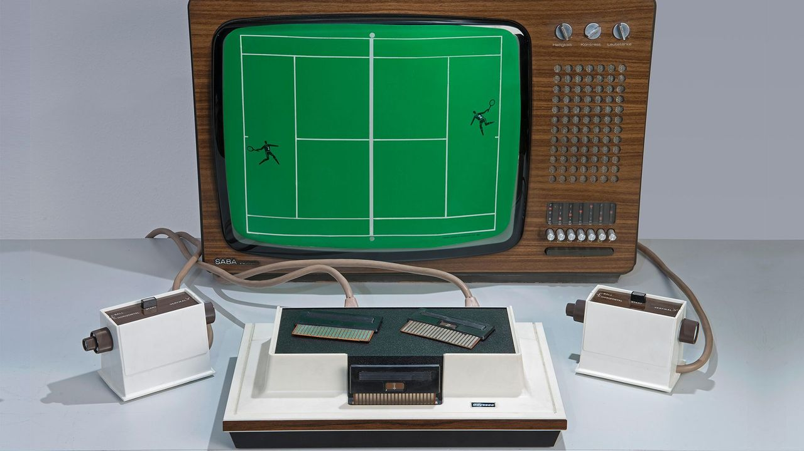
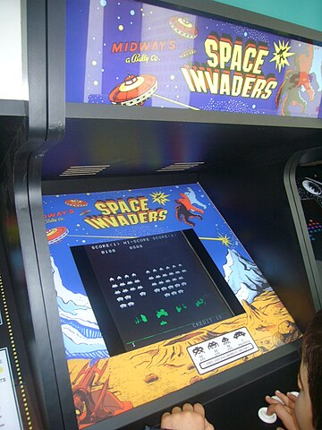
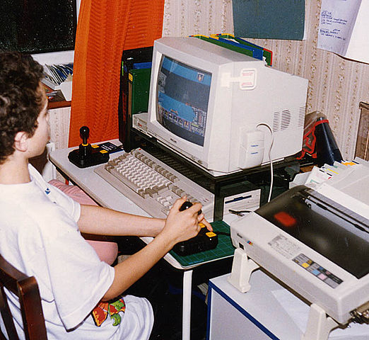

HOME
HOME OLD
OLD NEW
NEWThe history of video games began in the 1950s and 1960s as computer scientists began designing simple games and simulations on minicomputers and mainframes. Spacewar! was developed by Massachusetts Institute of Technology (MIT) student hobbyists in 1962 as one of the first such games on a video display. The first consumer video game hardware was released in the early 1970s.The first home video game console was the Magnavox Odyssey, and the first arcade video games were Computer Space and Pong.
After the ball-and-paddle market saturation in 1975, game developers began looking for new ideas for games, buoyed by the ability to use programmable microprocessors rather than analog components. Taito designer Tomohiro Nishikado, who had developed Gun Fight previously, was inspired by Atari's Breakout to create a shooting-based game, Space Invaders, first released in Japan in 1978. Space Invaders led off what is considered to be the golden age of arcade games which lasted from 1978 to 1982.
Later in the 1980s the next wave of personal computers emerged, with the Amiga and Atari ST in 1985. Both computers had more advanced graphics and sound capabilities than the prior generation of computers, and made for key platforms for video game development, particularly in the United Kingdom. The bedroom coders had since formed development teams and started producing games for these systems professionally.
The 1990s were a decade of marked innovation in video games. It was a decade of transition from raster graphics to 3D graphics and gave rise to several genres of video games including first-person shooter, real-time strategy, and MMO. Handheld games become more popular throughout the decade, thanks in part to the release of the Game Boy in 1989.[98] Arcade games experienced a resurgence in the early-to-mid-1990s, followed by a decline in the late 1990s as home consoles became more common.
The 2000s (decade) showed innovation on both consoles and PCs, and an increasingly competitive market for portable game systems. The impact of wider availability of the Internet led to new gameplay changes, changes in gaming hardware and the introduction of online services for consoles.
in the 2010s, the traditional model of racing to a five-year console life cycle was reduced.[191] Reasons included the challenge and massive expense of creating consoles that were graphically superior to the then-current generation, with Sony and Microsoft still looking to recoup development costs on their current consoles and the failure of content creation tools to keep up with the increased demands placed upon the people creating the games.
NVidia and AMD introduced graphics cards in 2020 with hardware support for real-time ray tracing, which was also a major component introduced with Microsoft and Sony's next consoles, the Xbox Series X/S and PlayStation 5, both released in November 2020. Significant improvements in technology also furthered the ability to display highly detailed textures, allowing for photorealism in rendered video game scenes at high resolutions and high frame rates. These changes necessitated larger storage space for texture memory on the hardware and greater bandwidth between the storage memory and graphic processor. Both new consoles included specialized SSD options designed to provide high-bandwidth storage options, which had the added benefit of virtually eliminating loading times in many games particular those featuring in-game streaming for open world games.